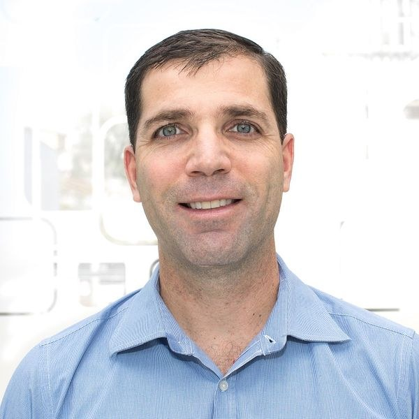

Dr. Leonardo De Mattos
Permanent Researcher and Head of the Biomedical Robotics Laboratory, Italian Institute of Technology
Leonardo De Mattos is a Permanent Researcher and Head of the Biomedical Robotics Laboratory at the Italian Institute of Technology in Genoa. He received his PhD in Electrical Engineering from North Carolina State University, where he worked at the Center for Robotics and Intelligent Machines. His research spans medical robotics, robot-assisted surgery, laser microsurgery, smart medical devices, computer vision, medical image analysis, mixed and augmented reality, biomedical sensors, systems integration, automation, usability analysis, and robotic micromanipulation. He has coordinated the European microRALP project and currently leads research on AIRCARE, robotic microsurgery, intravenous access, pediatric neurosurgery, and surgical augmented reality.